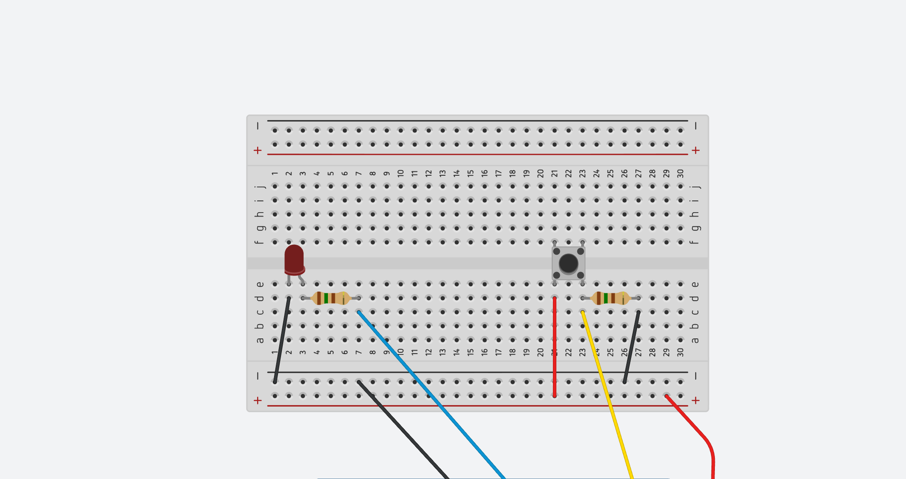
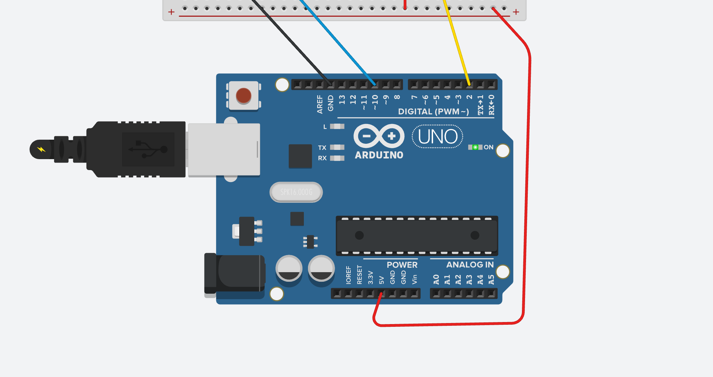

Botão Digital (Push Button)
Hoje vamos conhecer um novo componente digital: o botão digital, também chamado de Push Button.
Existem diversos modelos de botões disponíveis no mercado. Embora possam ter formatos, tamanhos e aparências diferentes, todos funcionam com o mesmo princípio básico. Na maioria dos casos, a diferença entre eles está apenas na estética ou na facilidade de utilização.
Como funciona um Push Button?
O Push Button atua como um interruptor temporário. Quando pressionado, ele fecha um circuito elétrico, permitindo a passagem da corrente elétrica. Quando solto, o circuito é interrompido novamente.
Os modelos mais simples possuem duas pernas (terminais):
- Um terminal recebe a tensão elétrica (por exemplo, 5V);
- O outro terminal conduz essa tensão para o restante do circuito quando o botão é pressionado.
Assim, ao apertar o botão, a corrente elétrica consegue circular pelo circuito.
Botões com Quatro Pernas
Alguns Push Buttons possuem quatro pernas. Isso não significa que eles tenham uma função diferente.
Na verdade, os terminais são ligados internamente em pares. Dessa forma, temos dois terminais repetidos de cada lado, facilitando a montagem em protoboards e outros circuitos.
O princípio de funcionamento continua exatamente o mesmo dos botões com duas pernas.
Módulo Botão
Também existem módulos prontos que já incluem o botão e os componentes necessários para seu funcionamento, como o resistor de proteção.
Nesses módulos encontramos normalmente três pinos:
- VCC → alimentação (5V);
- GND → terra;
- SINAL → pino utilizado para leitura do botão pelo Arduino.
Isso torna a montagem mais simples e organizada.
Importância do Resistor
Ao utilizar um botão em seus projetos, é recomendável utilizar um resistor.
Além de garantir uma leitura mais estável do sinal, ele ajuda a limitar a corrente elétrica que passa pelo circuito, aumentando a vida útil do botão e dos demais componentes.
Montagem do Circuito


Após montar o circuito, observamos que o LED está ligado ao Arduino da mesma forma que já vimos anteriormente.
A novidade é o botão:
- Um lado do botão está ligado ao pino 5V do Arduino;
- O outro lado está ligado ao pino digital 2;
- Esse mesmo ponto também está conectado ao GND através de um resistor.
Dessa forma, quando o botão é pressionado, o pino 2 recebe o sinal elétrico e o Arduino consegue identificar essa ação.
Estrutura Condicional IF / ELSE
Antes de analisar o código, vamos aprender uma nova estrutura de programação: IF / ELSE.
Ela permite que o Arduino tome decisões.
Sintaxe
if (condicao) {
// instruções executadas se a condição for verdadeira
}
else {
// instruções executadas se a condição for falsa
}
O Arduino primeiro verifica a condição. Somente depois dessa verificação ele executa o bloco de instruções correspondente.
Exemplo: Acendendo um LED com um Botão
// Acendendo o LED com botão
#define ledPin 10
#define buttonPin 2
void setup() {
pinMode(ledPin, OUTPUT);
pinMode(buttonPin, INPUT);
}
void loop() {
int estado = digitalRead(buttonPin);
delay(150);
if (estado == HIGH) {
digitalWrite(ledPin, HIGH);
}
else {
digitalWrite(ledPin, LOW);
}
}
Explicação do Código
1. Definição dos pinos
#define ledPin 10
#define buttonPin 2
Utilizamos #define para associar nomes aos números dos pinos.
Isso torna o código mais fácil de entender.
2. Configuração dos pinos
pinMode(ledPin, OUTPUT);
pinMode(buttonPin, INPUT);
- O pino do LED é configurado como saída (
OUTPUT); - O pino do botão é configurado como entrada (
INPUT).
3. Leitura do botão
// Acendendo o LED com botão
#define ledPin 10
#define buttonPin 2
void setup() {
pinMode(ledPin, OUTPUT);
pinMode(buttonPin, INPUT);
}
void loop() {
int estado = digitalRead(buttonPin);
delay(150);
if (estado == HIGH) {
digitalWrite(ledPin, HIGH);
}
else {
digitalWrite(ledPin, LOW);
}
}
O Arduino executa milhares de instruções por segundo. Esse pequeno atraso ajuda a evitar leituras repetidas muito rápidas enquanto o botão está sendo pressionado ou liberado.
5. Tomada de decisão
if (estado == HIGH)
Se o botão estiver pressionado, o valor lido será HIGH.
Nesse caso:
digitalWrite(ledPin, HIGH);
O LED será aceso.
Caso contrário:
digitalWrite(ledPin, LOW);
O LED permanecerá apagado.
Resumo
- O Push Button é um componente de entrada digital.
- Quando pressionado, ele permite a passagem da corrente elétrica.
- O Arduino pode ler o estado do botão através de um pino digital.
- Utilizamos
digitalRead()para verificar se o botão foi pressionado. - A estrutura
if/elsepermite que o Arduino tome decisões com base nessa leitura. - Quando o botão é pressionado, o LED acende; quando é solto, o LED apaga.